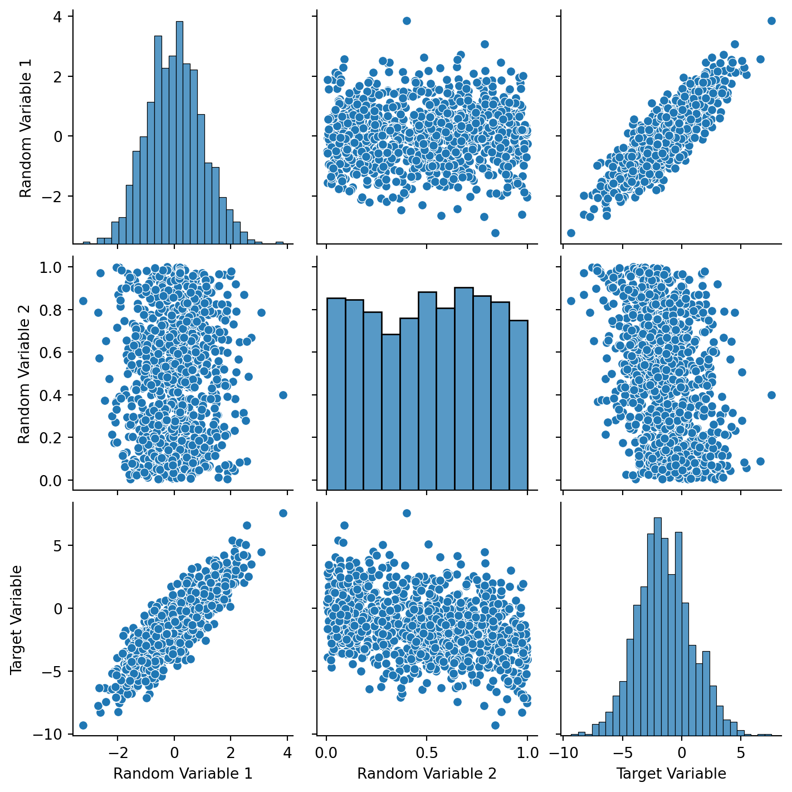
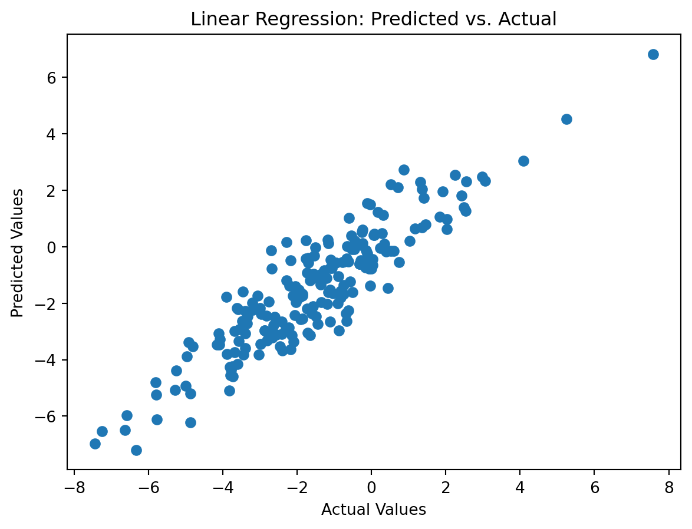

Probability Theory and Machine Learning: A Practical Guide with Python
In the realm of data science, probability theory plays a fundamental role in understanding the underlying patterns and relationships within data. It provides a powerful framework for quantifying uncertainty and making informed decisions based on statistical analysis. Machine learning algorithms, which are at the heart of modern artificial intelligence, heavily rely on probability concepts to effectively model and predict outcomes.
In this blog post, we will embark on a practical journey through probability theory and machine learning using Python, a versatile programming language widely used in data science applications. We will delve into the concepts of random variables, probability distributions, and Gaussian Naive Bayes classification, while also exploring linear regression and its applications in predictive modeling.
Exploring Random Variables and Probability Distributions
Random variables are the cornerstone of probability theory, representing quantities that can take on different values with associated probabilities. They are often represented by letters like X or Y, and their possible values are collectively known as the sample space.
Probability distributions, on the other hand, describe the likelihood of different values for a random variable. They are the foundation for making inferences about the behavior of random phenomena. Common probability distributions include the normal distribution, the uniform distribution, and the binomial distribution.
Gaussian Naive Bayes Classification
Gaussian Naive Bayes is a classification algorithm that assumes a Gaussian (normal) distribution for each feature in each class. It is a simple yet effective algorithm that is well-suited for problems with a small number of features and a large number of training examples.
To illustrate the application of Gaussian Naive Bayes, consider the Iris dataset, which contains measurements of the sepal and petal length and width of three different species of irises. We can use Gaussian Naive Bayes to classify new irises based on their measurements.
Implementing Gaussian Naive Bayes in Python
The provided Python code demonstrates the implementation of Gaussian Naive Bayes for Iris classification. It includes steps for loading the Iris dataset, splitting the data into training and testing sets, training the Gaussian Naive Bayes model, evaluating the model’s performance, and visualizing the results using confusion matrix and classification report.
Code
import pandas as pdimport seaborn as snsimport matplotlib.pyplot as pltfrom sklearn.model_selection import train_test_splitfrom sklearn.naive_bayes import GaussianNBfrom sklearn.metrics import accuracy_score, confusion_matrix, classification_report# Load the Iris dataset from a CSV fileiris_df = pd.read_csv('Iris.csv') # Replace 'your_iris_dataset.csv' with the actual file path# Split the data into features (X) and target variable (y)X = iris_df.drop('Species', axis=1)y = iris_df['Species']
Code
# Split the data into training and testing setsX_train, X_test, y_train, y_test = train_test_split(X, y, test_size=0.2, random_state=42)# Train a Gaussian Naive Bayes Classifiermodel = GaussianNB()model.fit(X_train, y_train)
GaussianNB()
In a Jupyter environment, please rerun this cell to show the HTML representation or trust the notebook. On GitHub, the HTML representation is unable to render, please try loading this page with nbviewer.org.
GaussianNB()
Code
# Make predictionsy_pred = model.predict(X_test)# Visualize the Confusion Matrixplt.figure(figsize=(8, 6))sns.heatmap(confusion_matrix(y_test, y_pred), annot=True, cmap='Blues', fmt='g', cbar=False)plt.title('Confusion Matrix')plt.xlabel('Predicted Label')plt.ylabel('True Label')plt.show()
This code demonstrates the simplicity and effectiveness of Gaussian Naive Bayes classification for a classification task with a small number of features. The confusion matrix and classification report provide insights into the model’s performance, indicating its ability to correctly classify the different Iris species. Exploring Random Variables and Target Variables: A Linear Regression Approach
In the realm of machine learning and statistical analysis, random variables play a pivotal role in understanding the relationships between different data points. They represent quantities that can take on various values with associated probabilities, forming the basis for statistical modeling and predictive analysis.
In this section, we will explore the concept of random variables and their influence on a target variable, demonstrating the application of linear regression to model the relationship between these variables.
Code
import numpy as npimport pandas as pdimport seaborn as snsimport matplotlib.pyplot as pltfrom sklearn.model_selection import train_test_splitfrom sklearn.linear_model import LinearRegressionfrom sklearn.metrics import mean_squared_error
Creating Synthetic Data with Random Variables
To illustrate the concepts, we will create a synthetic dataset consisting of two random variables, Random Variable 1 and Random Variable 2, along with a target variable, Target Variable. The target variable will be generated from a linear combination of the two random variables, incorporating additional noise to simulate real-world scenarios.
Code
# Create synthetic data with random variablesnp.random.seed(42)size =1000random_variable_1 = np.random.normal(0, 1, size)random_variable_2 = np.random.uniform(0, 1, size)target_variable =2* random_variable_1 -3* random_variable_2 + np.random.normal(0, 1, size)# Create a DataFramedf = pd.DataFrame({'Random Variable 1': random_variable_1,'Random Variable 2': random_variable_2,'Target Variable': target_variable})
Visualizing Relationships between Random Variables and Target Variable
To gain insights into the relationships between the random variables and the target variable, we will utilize seaborn’s pairplot function. This tool allows us to visualize the distribution of each variable and identify any potential correlations between them.
Code
# Visualize the relationship between the random variables and the target variablesns.pairplot(df)plt.show()# Split the data into features (X) and target variable (y)X = df[['Random Variable 1', 'Random Variable 2']]y = df['Target Variable']

Splitting Data into Training and Testing Sets
Before applying linear regression, we will split the synthetic data into training and testing sets. The training set will be used to fit the linear regression model, while the testing set will be used to evaluate the model’s performance on unseen data.
Code
# Split the data into training and testing setsX_train, X_test, y_train, y_test = train_test_split(X, y, test_size=0.2, random_state=42)
Training a Linear Regression Model
Linear regression is a statistical method that assumes a linear relationship between the independent variables (random variables) and the dependent variable (target variable). By fitting a linear model to the training data, we can estimate the coefficients that represent the contribution of each random variable to the target variable.
Code
# Train a Linear Regression modelmodel = LinearRegression()model.fit(X_train, y_train)
LinearRegression()
In a Jupyter environment, please rerun this cell to show the HTML representation or trust the notebook. On GitHub, the HTML representation is unable to render, please try loading this page with nbviewer.org.
LinearRegression()
Making Predictions and Evaluating Model Performance
Using the trained linear regression model, we can make predictions for the target variable based on the values of the random variables in the testing set. To assess the model’s performance, we will calculate the mean squared error (MSE), which measures the average squared difference between the predicted and actual values of the target variable.
Code
# Make predictionsy_pred = model.predict(X_test)# Evaluate the modelmse = mean_squared_error(y_test, y_pred)print(f'Mean Squared Error: {mse}')
Mean Squared Error: 0.8492309009763218
Visualizing Predicted vs. Actual Values
To further evaluate the model’s performance, we will create a scatter plot comparing the predicted values of the target variable to the actual values. This visualization provides a visual representation of how well the model captures the underlying relationship between the random variables and the target variable.
Code
# Visualize the predicted vs. actual valuesplt.scatter(y_test, y_pred)plt.xlabel('Actual Values')plt.ylabel('Predicted Values')plt.title('Linear Regression: Predicted vs. Actual')plt.show()

Source Code
---title: "Probability Theory and Random Variables "author: "Aishwarya"date: "2023-11-27"categories: [Probability Theory, Random Variables, Machine Learning Applications]format: html: code-fold: true code-tools: truejupyter: python3---**Probability Theory and Machine Learning: A Practical Guide with Python**In the realm of data science, probability theory plays a fundamental role in understanding the underlying patterns and relationships within data. It provides a powerful framework for quantifying uncertainty and making informed decisions based on statistical analysis. Machine learning algorithms, which are at the heart of modern artificial intelligence, heavily rely on probability concepts to effectively model and predict outcomes.In this blog post, we will embark on a practical journey through probability theory and machine learning using Python, a versatile programming language widely used in data science applications. We will delve into the concepts of random variables, probability distributions, and Gaussian Naive Bayes classification, while also exploring linear regression and its applications in predictive modeling.**Exploring Random Variables and Probability Distributions**Random variables are the cornerstone of probability theory, representing quantities that can take on different values with associated probabilities. They are often represented by letters like X or Y, and their possible values are collectively known as the sample space.Probability distributions, on the other hand, describe the likelihood of different values for a random variable. They are the foundation for making inferences about the behavior of random phenomena. Common probability distributions include the normal distribution, the uniform distribution, and the binomial distribution.**Gaussian Naive Bayes Classification**Gaussian Naive Bayes is a classification algorithm that assumes a Gaussian (normal) distribution for each feature in each class. It is a simple yet effective algorithm that is well-suited for problems with a small number of features and a large number of training examples.To illustrate the application of Gaussian Naive Bayes, consider the Iris dataset, which contains measurements of the sepal and petal length and width of three different species of irises. We can use Gaussian Naive Bayes to classify new irises based on their measurements.**Implementing Gaussian Naive Bayes in Python**The provided Python code demonstrates the implementation of Gaussian Naive Bayes for Iris classification. It includes steps for loading the Iris dataset, splitting the data into training and testing sets, training the Gaussian Naive Bayes model, evaluating the model's performance, and visualizing the results using confusion matrix and classification report.```{python}import pandas as pdimport seaborn as snsimport matplotlib.pyplot as pltfrom sklearn.model_selection import train_test_splitfrom sklearn.naive_bayes import GaussianNBfrom sklearn.metrics import accuracy_score, confusion_matrix, classification_report# Load the Iris dataset from a CSV fileiris_df = pd.read_csv('Iris.csv') # Replace 'your_iris_dataset.csv' with the actual file path# Split the data into features (X) and target variable (y)X = iris_df.drop('Species', axis=1)y = iris_df['Species']``````{python}# Split the data into training and testing setsX_train, X_test, y_train, y_test = train_test_split(X, y, test_size=0.2, random_state=42)# Train a Gaussian Naive Bayes Classifiermodel = GaussianNB()model.fit(X_train, y_train)``````{python}# Make predictionsy_pred = model.predict(X_test)# Visualize the Confusion Matrixplt.figure(figsize=(8, 6))sns.heatmap(confusion_matrix(y_test, y_pred), annot=True, cmap='Blues', fmt='g', cbar=False)plt.title('Confusion Matrix')plt.xlabel('Predicted Label')plt.ylabel('True Label')plt.show()``````{python}# Visualize the Classification Reportreport_df = pd.DataFrame.from_dict(classification_report(y_test, y_pred, output_dict=True))plt.figure(figsize=(8, 6))sns.heatmap(report_df.iloc[:-1, :].T, annot=True, cmap='Blues', fmt='.2f', cbar=False)plt.title('Classification Report')plt.show()```This code demonstrates the simplicity and effectiveness of Gaussian Naive Bayes classification for a classification task with a small number of features. The confusion matrix and classification report provide insights into the model's performance, indicating its ability to correctly classify the different Iris species.**Exploring Random Variables and Target Variables:** A Linear Regression ApproachIn the realm of machine learning and statistical analysis, random variables play a pivotal role in understanding the relationships between different data points. They represent quantities that can take on various values with associated probabilities, forming the basis for statistical modeling and predictive analysis.In this section, we will explore the concept of random variables and their influence on a target variable, demonstrating the application of linear regression to model the relationship between these variables.```{python}import numpy as npimport pandas as pdimport seaborn as snsimport matplotlib.pyplot as pltfrom sklearn.model_selection import train_test_splitfrom sklearn.linear_model import LinearRegressionfrom sklearn.metrics import mean_squared_error```**Creating Synthetic Data with Random Variables**To illustrate the concepts, we will create a synthetic dataset consisting of two random variables, Random Variable 1 and Random Variable 2, along with a target variable, Target Variable. The target variable will be generated from a linear combination of the two random variables, incorporating additional noise to simulate real-world scenarios.```{python}# Create synthetic data with random variablesnp.random.seed(42)size =1000random_variable_1 = np.random.normal(0, 1, size)random_variable_2 = np.random.uniform(0, 1, size)target_variable =2* random_variable_1 -3* random_variable_2 + np.random.normal(0, 1, size)# Create a DataFramedf = pd.DataFrame({'Random Variable 1': random_variable_1,'Random Variable 2': random_variable_2,'Target Variable': target_variable})```**Visualizing Relationships between Random Variables and Target Variable**To gain insights into the relationships between the random variables and the target variable, we will utilize seaborn's pairplot function. This tool allows us to visualize the distribution of each variable and identify any potential correlations between them.```{python}# Visualize the relationship between the random variables and the target variablesns.pairplot(df)plt.show()# Split the data into features (X) and target variable (y)X = df[['Random Variable 1', 'Random Variable 2']]y = df['Target Variable']```**Splitting Data into Training and Testing Sets**Before applying linear regression, we will split the synthetic data into training and testing sets. The training set will be used to fit the linear regression model, while the testing set will be used to evaluate the model's performance on unseen data.```{python}# Split the data into training and testing setsX_train, X_test, y_train, y_test = train_test_split(X, y, test_size=0.2, random_state=42)```**Training a Linear Regression Model**Linear regression is a statistical method that assumes a linear relationship between the independent variables (random variables) and the dependent variable (target variable). By fitting a linear model to the training data, we can estimate the coefficients that represent the contribution of each random variable to the target variable.```{python}# Train a Linear Regression modelmodel = LinearRegression()model.fit(X_train, y_train)```**Making Predictions and Evaluating Model Performance**Using the trained linear regression model, we can make predictions for the target variable based on the values of the random variables in the testing set. To assess the model's performance, we will calculate the mean squared error (MSE), which measures the average squared difference between the predicted and actual values of the target variable.```{python}# Make predictionsy_pred = model.predict(X_test)# Evaluate the modelmse = mean_squared_error(y_test, y_pred)print(f'Mean Squared Error: {mse}')```**Visualizing Predicted vs. Actual Values**To further evaluate the model's performance, we will create a scatter plot comparing the predicted values of the target variable to the actual values. This visualization provides a visual representation of how well the model captures the underlying relationship between the random variables and the target variable.```{python}# Visualize the predicted vs. actual valuesplt.scatter(y_test, y_pred)plt.xlabel('Actual Values')plt.ylabel('Predicted Values')plt.title('Linear Regression: Predicted vs. Actual')plt.show()```